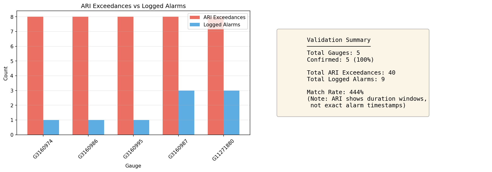
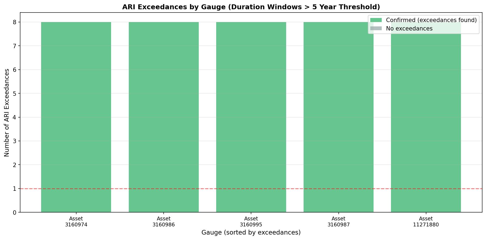
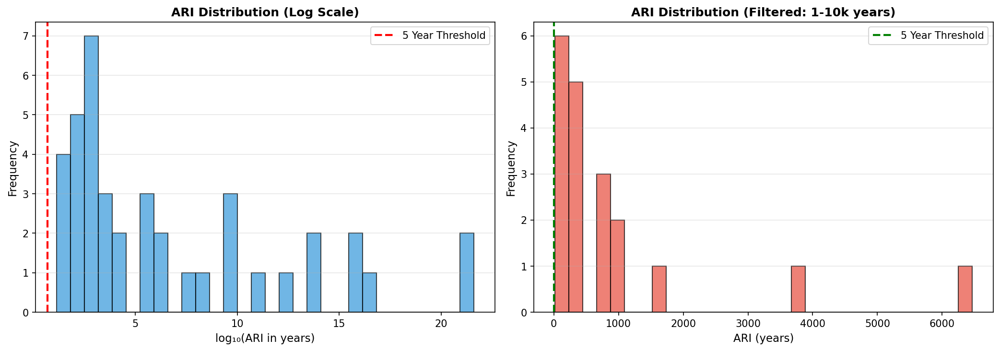
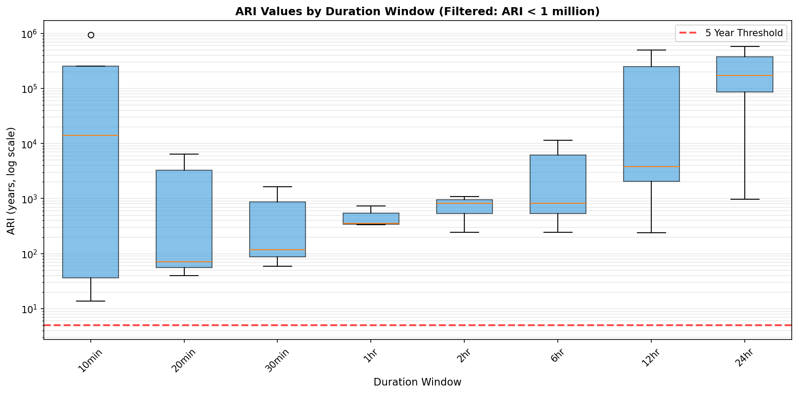
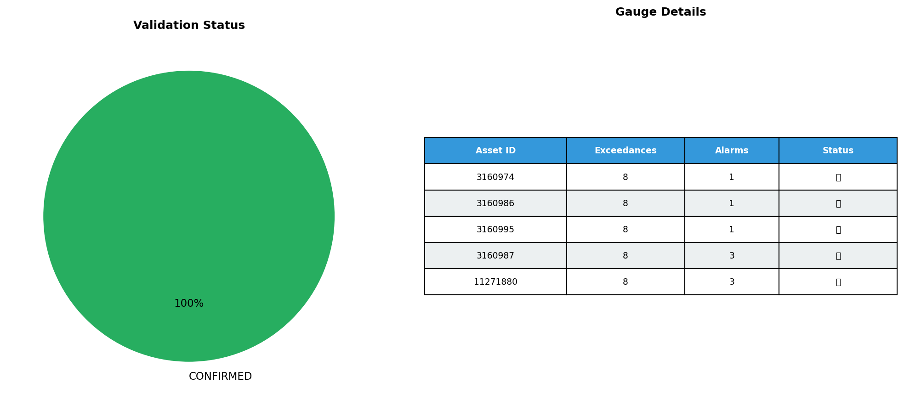

🌧️ ARI Alarm Validation Report
Generated: 2025-12-13 19:34:48
✅ Validation Complete
Successfully validated ARI alarms using Moata API endpoint:
/v1/traces/{traceId}/ari?type=Tp108
⚠️ Important Note: ARI endpoint returns duration-based aggregate values
(10 min to 24 hour windows) rather than point-in-time measurements. This is expected behavior
for virtual ARI traces. Validation confirms that rainfall events exceeded the 5-year ARI threshold
during the alarm period.
📊 Visualizations
Validation Summary

Exceedances by Gauge

ARI Distribution

Duration Analysis

Validation Status

📄 Detailed Results
Full results available in: validation_summary.csv